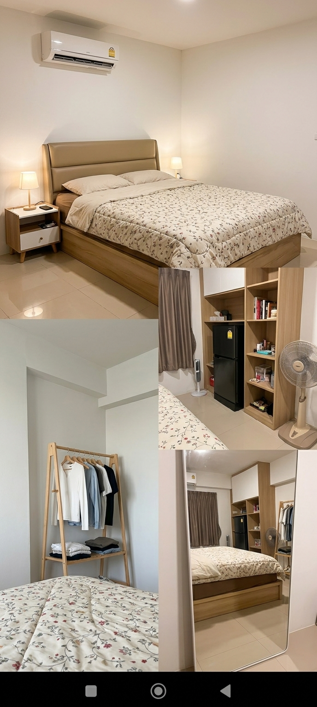

สำรวจด้วยไฟฉาย
เลื่อนเมาส์หรือแตะ เพื่อส่องไฟ
“
บางคนอยู่ในสาย…
บางสิ่งอยู่ข้างหลัง
เลิกกะดึก ไม่มีวิน และทางกลับหอที่ไม่เหมือนเดิม
คืนนี้ ทัยมีเพียงไฟฉาย กับเพื่อนคนหนึ่งที่รับโทรศัพท์
ฉบับเล่นง่าย · ปุ่มใหญ่และถวายของด้วยการแตะ
ขอให้ทัยมีความสุขมาก ๆ สุขภาพแข็งแรง
เหนื่อยจากงานก็ขอให้มีเรื่องดี ๆ รออยู่เสมอ
และไม่ว่าจะกลับดึกแค่ไหน ก็ยังมีเพื่อนให้โทรหา ♡
